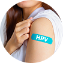
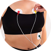
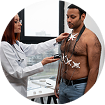
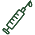

Cuidar da saúde é um ato de amor
Confira os principais exames de prevenção por faixa etária.
Confira os principais exames de prevenção por faixa etária.
Os exames preventivos são fundamentais para detectar doenças em estágios iniciais, quando o tratamento é mais eficaz e menos invasivo. Manter uma rotina de check-ups regulares pode salvar vidas e garantir uma melhor qualidade de vida para você e sua família.
Identifique problemas antes que se tornem graves
Proteja toda a família com exames regulares

Viva mais e melhor com prevenção adequada



 Autoexame das Mamas
Autoexame das MamasRealize o autoexame das mamas todo mês, entre o 7º e 10º dia após o início da menstruação. Para mulheres na menopausa, escolha um dia fixo.
Homens e pessoas com testículos devem realizar o autoexame mensalmente, de preferência após o banho, para identificar alterações como nódulos ou inchaços.

Vacinas em DiaTodos devem manter a carteira de vacinação atualizada. Algumas vacinas precisam de reforço na idade adulta, como tétano, difteria e hepatite B.
Cuidar da mente é tão importante quanto do corpo. Reserve momentos para relaxar, dormir bem e buscar apoio se sentir necessidade.